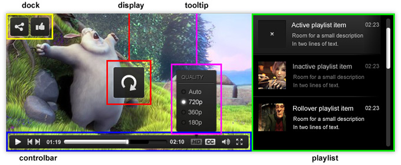
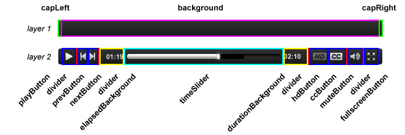
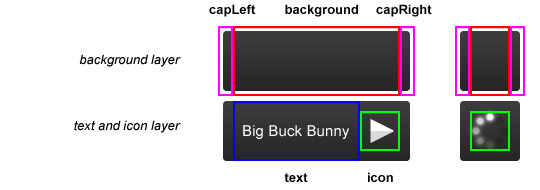
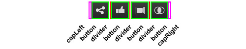
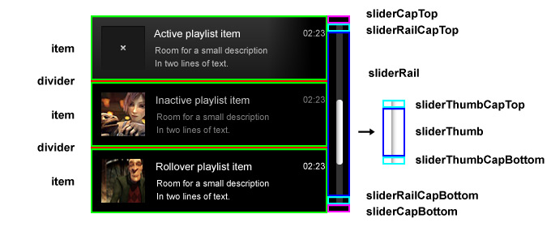
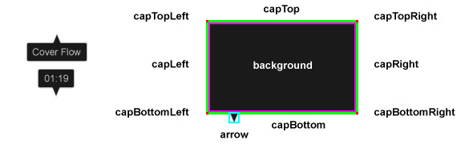

Skin XML Reference
This guide provides a reference of all components, settings and elements supported in the JW Player skin XML. If you're looking for information on how to get and install existing skins, see Using JW Player Skins. If you're looking for an overview on building skins, see Building JW Player Skins.
Introduction
As explained in Building JW Player Skins, a JW Player skin is essentially an XML file containing settings and image elements. These settings and elements are grouped into 5 components:

This guide provides an elaborate overview of all settings and elements these five components support. For all settings, default values are listed between braces.
Controlbar
The controlbar component contains all settings and elements for the video controls at the bottom of the screen. It is built using two layers: the background (with endcaps) and the buttons. This diagram presents an overview:

The controlbar is the most extensive component, partly due to the large amount of controls and partly due to all controls having active and inactive, rollover and rollout states.
Controlbar Settings
- margin (8)
- This is the margin from the controlbar to the edges of the display. Can be any number.
- maxwidth (800)
- The maximum width of the controlbar. For large displays (e.g. fullscreen), the bar is then horizontally centered instead of extended to the edges. Can be any number.
- fontcolor (eeeeee)
- The color for the elapsed time and media duration. Can be any hexadecimal color value.
- fontsize (11)
- The font size of the elapsed time and media duration. Can be a number between 8 and 16.
- fontweight (bold)
- The font weight for the elapsed time and media duration. Can be normal or bold.
Controlbar Elements
- background
-
Background graphic that stretches horizontally to fit the entire bar.
- capLeft
-
The left cap graphic to your controlbar. Used to create round edges.
- capRight
-
The right cap graphic to your controlbar. Used to create round edges.
- divider
-
A separator element that logically divides the controlbar features. Appears to the left of the prevButton, elapsedText, qualityButton, muteButton and fullscreenButton.
- playButton
-
Button that starts playback of the media. Toggles with pauseButton.
- playButtonOver
-
Rollover state of the playButton.
- pauseButton
-
Button that pauses playback of the media. Toggles with playButton.
- pauseButtonOver
-
Rollover state of the pauseButton.
- prevButton
-
Button that starts playback of the previous item in the playlist. Only displayed when a playlist of more than one item is present.
- prevButtonOver
-
Rollover state of the prevButton.
- nextButton
-
Button that starts playback of the previous item in the playlist. Only displayed when a playlist of more than one item is present.
- nextButtonOver
-
Rollover state of the nextButton.
- elapsedBackground
-
Background element of the elapsed time. The element is stretched to fill the elapsed text area, plus 5 pixels padding to the left and right. When not available, the elapsed time is hidden.
- durationBackground
-
Background element of the video duration. The element is stretched to fill the duration text area, plus 5 pixels padding to the left and right. When not available, the video duration is hidden.
- hdButton
-
Displayed when multiple video quality levels are available. Upon click, it displays the quality selection tooltip.
- hdButtonOver
-
Rollover state for the hdButton.
- ccButton
-
Displayed when captions are available. Upon click, it displays the captions selection tooltip.
- ccButtonOver
-
Rollover state of the ccButton.
- muteButton
-
Button that is displayed when the media is not muted. It pops up a volume tooltip on rollover and mutes the audio on click. Toggles with the unmuteButton.
- muteButtonOver
-
Rollover state of the muteButton.
- unmuteButton
-
Button that is displayed when the media is muted. It pops up a volume tooltip on rollover and unmutes the audio on click. Toggles with the muteButton.
- unmuteButtonOver
-
Rollover state of the unmuteButton
- fullscreenButton
-
Button that switches to fullscreen playback of the media. Toggles with normalscreenButton.
- fullscreenButtonOver
-
Rollover state of the fullscreenButton
- normalscreenButton
-
Button that exits fullscreen playback of the media. Toggles with fullscreenButton.
- normalscreenButtonOver
-
Rollover state of the normalscreenButton
Note that omitting a button (e.g. the fullscreenButton and normalscreenButton) from the XML will hide that button from the controlbar. It is also possible to omit all rollOver elements to keep the skin small.
Controlbar timeSlider
The timeSlider is a special case. It is stretched horizontally to fill the controlbar, and it consists of multiple layers of elements. Here's a diagram, followed by the list of elements:

- timeSliderCapLeft
-
Left-hand end cap, placed to the left of the other timeSlider elements. Is never overlaid.
- timeSliderCapRight
-
Right-hand end cap, placed to the right of the other timeSlider elements. Is never overlaid.
- timeSliderRail
-
The background graphic which serves as the frame for the timeSlider. Is stretched horizontally.
- timeSliderRailCapLeft
-
Left-hand rail end cap, used to create round or fading edges. Overlaid by buffer and progress elements.
- timeSliderRailCapRight
-
Right-hand rail end cap, used to create round or fading edges. Overlaid by buffer and progress elements.
- timeSliderBuffer
-
Element that displays how much of the media is buffered. Is stretched horizontally.
- timeSliderBufferCapLeft
-
Left-hand buffer end cap, used to create round or fading edges. Overlaid by progress elements.
- timeSliderBufferCapRight
-
Right-hand buffer end cap, used to create round or fading edges. Overlaid by progress elements.
- timeSliderProgress
-
Element that displays the current playback position in the media. Is stretched horizontally.
- timeSliderProgressCapLeft
-
Left-hand progress end cap, used to create round or fading edges.
- timeSliderProgressCapRight
-
Right-hand progress end cap, used to create round or fading edges.
- timeSliderThumb
-
Serves as a handle which can be dragged across the progress bar to allow the user to specify a seek position.
Note the multitude of end caps is not needed in many skin designs. Only when working with round corners or other edge effects, these end caps need added. The rail, buffer and progress elements are always needed though.
Display
The display component contains all settings and elements for the (re)play, buffer and error icons in the middle of the screen. Like the controlbar, it is built up using a background and button layer:

Note a 5px padding is placed to the left and to the right of the video title or error message in the display, to prevent these texts from looking too crammed.
Display Settings
- bufferrotation (45)
-
The number of degrees the buffer icon is rotated per rotation. A negative value will result in the buffer rotating counter-clockwise.
- bufferinterval (100)
-
The amount of time, in milliseconds between each buffer icon rotation.
- fontcolor (cccccc)
-
Color of the video title or error message displayed in the center icon.
- fontsize (15)
-
Size of the video title or error message displayed in the center icon.
- fontweight (normal)
-
Weight of the video title or error message displayed in the center icon. Can be normal or bold.
- overcolor (ffffff)
-
Color of the video title or error message when the user moves his mouse over the display.
Display Elements
- background
-
The background is a graphic which is placed behind the display icons, and is centered inside the Display.
- backgroundOver
-
Rollover graphic for the display background.
- capLeft
-
When a title or error is displayed, the background image is stretched horizontally to fit the message. This cap is not stretched and placed to the left of the background.
- capLeftOver
-
Rollover graphic for the left display cap.
- capRight
-
When a title or error is displayed, the background image is stretched horizontally to fit the message. This cap is not stretched and placed to the right of the background.
- capRightOver
-
Rollover graphic for the right display cap.
- bufferIcon
-
This element is displayed when the player is in a buffering state. It will be rotated around its center.
- errorIcon
-
This element is displayed when the player encountered a playback error (e.g. video not found).
- playIcon
-
This element is displayed when the player is paused or idle.
- playIconOver
-
This element replaces the playIcon element when the user hovers the mouse over it.
- replayIcon
-
This element is displayed when the player is completed.
- replayIconOver
-
This element replaces the replayIcon element when the user hovers the mouse over it.
Note all rollOver graphics can be omitted to keep the skin filesize low.
Dock
The Dock is placed in the top left side of the player and provides links to more advanced functionalities like social sharing, related videos and 3d playlists. It consists of a single layer of graphics:

Note the actual icons inside the dock buttons are not part of the skin. These icons are provided by the plugin or javascript that has added the feature to the player. We strongly recommend plugin developers to use white icons of roughly 20x20 pixels, so a uniform look can be achieved across skins.
Dock Settings
- margin (8)
-
Margin in pixels from the dock to the left and top edges of the display.
- iconalpha (0.75)
-
The alpha value of a dock button icon. These icons are usually white, so alpha can be used to change the colors a little.
- iconalphaactive (0.5)
-
The alpha value of a dock button icon in the active state. An icon is active when it is associated with an overlay and that overlay is visible.
- iconalphaover (1)
-
The alpha value of a dock button icon in the over state.
Dock Elements
- capLeft
-
Left-hand end cap for the dock. Use it to render (round) edge effects when portraying the dock as a bar.
- capRight
-
Right-hand end cap for the dock. Use it to render (round) edge effects when portraying the dock as a bar.
- divider
-
Divider element displayed between dock buttons. Use it for spacing between buttons or other divider effects.
- button
-
Background element for a dock button.
- buttonOver
-
Background element for a dock button in the over state (mouse hovering).
- buttonActive
-
Background element for a dock button in the active state (its overlay is visible).
Playlist
The playlist listbar is displayed below or to the right of the display area. It consists of a list of items and dividers. A scrollbar slider is displayed if the entire playlist does not fit the listbar:

The height of a listbar item is determined by the height of the item element. It contains an itemImage element, plus title and description texts. The itemImage element is placed at the left, with equal margins around. The texts are placed to the right of the image.
Playlist Settings
- backgroundcolor (333333)
-
The playlist background color. Displayed below any transparante item / slider elements.
- fontcolor (999999)
-
The standard color for the item texts.
- fontsize (11)
-
Font size of the item texts.
- fontweight (normal)
-
Font weight of the item texts (normal, bold).
- overcolor (cccccc)
-
The color for the (active or inactive) item texts when the mouse is hovering over that item.
- activecolor (cccccc)
-
The color for the item texts when that item is the currently active item.
- titlecolor (cccccc)
-
Override the title fontcolor with this option, for a more visually interesting playlist.
- titlesize (13)
-
Override the title fontsize with this option, for a more visually interesting playlist.
- titleweight (normal)
-
Override the title fontweight with this option, for a more visually interesting playlist.
- titleovercolor (ffffff)
-
Override the title overcolor with this option, for a more visually interesting playlist.
- titleactivecolor (ffffff)
-
Override the title activecolor with this option, for a more visually interesting playlist.
Playlist Elements
- divider
-
Element that's displayed in between (but not above/below) the playlist items.
- item
-
Background graphic for each playlist item. Stretches to the width of the playlist, minus the slider width (if visible). Is required for a playlist to look OK.
- itemActive
-
Active state for item. Replaces item whenever the corresponding playlist item is the currently playing/loaded playlist item.
- itemImage
-
Image placeholder. This element is visible when the playlist is set to extended and the item does not have an image associated with it. If the item does have an image, this element is used as a mask for the video thumb.
- itemOver
-
Over state for item. Replaces item (active or inactive) whenever the user mouses over.
- sliderCapTop
-
Top end cap for the playlist slider. Placed above sliderRail. Set this for playlist padding or edge effects.
- sliderCapBottom
-
Bottom end cap for the playlist slider. Placed below sliderRail. Set this for playlist padding or edge effects.
- sliderRail
-
Background of the vertical slider. When the playlist's slider is visible, sliderRail is stretched to the height of the playlist, minus the height of the end caps.
- sliderRailCapTop
-
Top end cap for the playlist slider rail. Add this to enable round borders, small arrows or other effects.
- sliderRailCapBottom
-
Bottom end cap for the playlist slider rail. Add this to enable round borders, small arrows or other effects.
- sliderThumb
-
Draggable thumb for the vertical slider. This element is stretched vertically, proportional to the visible area of the playlist versus its total size.
- sliderThumbCapTop
-
Top end cap for the playlist slider thumb. Add this to enable round borders, small arrows or other effects.
- sliderThumbCapBottom
-
Bottom end cap for the playlist slider thumb. Add this to enable round borders, small arrows or other effects.
Tooltip
The tooltip is an element that's displayed when interacting with certain buttons of the controlbar or dock. There are various types of tooltips, some of which can be interactive (like the volume slider or HD menu).

The background of the tooltip consists of a 9-slide grid, with a stretched center and additional elements for all caps. An arrow is displayed either above or below the grid. The caps are not required, but useful for controlling margins and creating edge effects.

In addition to the, elements are available for the menus and slider. The volume has caps, rail, progress and thumb elements (like other sliders). The hdMenu and ccMenu have a cap and share menuOption elements:
Tooltip Settings
- fontcase (normal)
-
Casing of the tooltip texts. Can be normal or upper.
- fontcolor (cccccc)
-
Color of the tooltip texts.
- fontsize (11)
-
Font size of the tooltip texts.
- fontweight (normal)
-
Font weight of the tooltip texts. Can be bold or normal.
- activecolor (ffffff)
-
Color of the tooltip menu texts when that option is the currently active one.
- overcolor (ffffff)
-
Color of the tooltip option texts when rolling over that option with the mouse.
Tooltip Elements
- arrow
-
Small arrow that points from the tooltip area to the source element. Half of the arrow is displayed on top of the element, half of the arrow is displayed outside of it.
- background
-
Background element of the tooltip. Is stretched both horizontally and vertically to fit the tooltip contents.
- capLeft
-
Element that's displayed to the left of the background element. Is stretched vertically, but not horizontally. Used to draw borders.
- capRight
-
Element that's displayed to the right of the background element. Is stretched vertically, but not horizontally. Used to draw borders.
- capTop
-
Element that's displayed above the background element. Is stretched horizontally, but not vertically. Used to draw borders.
- capBottom
-
Element that's displayed below the background element. Is stretched horizontally, but not vertically. Used to draw borders.
- capTopLeft
-
Element that's displayed to the top left of the background. Is not stretched at all. Used to draw round edges.
- capTopRight
-
Element that's displayed to the top right of the background. Is not stretched at all. Used to draw round edges.
- capBottomLeft
-
Element that's displayed to the bottom left of the background. Is not stretched at all. Used to draw round edges.
- capBottomRight
-
Element that's displayed to the bottom right of the background. Is not stretched at all. Used to draw round edges.
- menuOption
-
Checkbox element for menu options, displayed to the left of the option labels.
- menuOptionOver
-
Checkbox element for menu options, displayed when an option is active.
- menuOptionActive
-
Checkbox element for menu options, displayed when rolling over the option.
- menuTopHD
-
Element that's displayed above the quality selection menu. Used for controlling spacing or adding a description.
- menuTopCC
-
Element that's displayed above the captions selection menu. Used for controlling spacing or adding a description.
- volumeCapTop
-
Element that's displayed above the rail. Used for drawing borders or emboss effects.
- volumeCapBottom
-
Element that's displayed below the rail. Used for drawing borders or emboss effects.
- volumeRail
-
Background element for the vertical volume slider. The height of this rail is used as the range for the volume.
- volumeRailCapTop
-
Top rail end cap, used to create round or fading edges. Overlaid by the thumb and progress elements.
- volumeRailCapBottom
-
Bottom rail end cap, used to create round or fading edges. Overlaid by the thumb and progress elements.
- volumeProgress
-
Element that visualizes the current volume percentage. Is masked for the current volume percentage.
- volumeProgressCapTop
-
Top progress end cap, used to create round or fading edges. Overlaid by the thumb.
- volumeProgressCapBottom
-
Bottom progress end cap, used to create round or fading edges. Overlaid by the thumb.
- volumeThumb
-
Draggable thumb that indicates the current volume setting. Is not stretched.